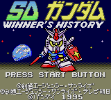

Gundam - Game Gear Games

From Phillip Yee:
It is based in the Gundam world where you choose which Organization you which to side with and are given an amout of
units to use aganst the enemy (computer). Combat is arcade based and in order to last, you must capture colonies for
income to make more units to overcome the enemy.
Anime Video Game Resource Center © 1998 by Luis A. Cruz